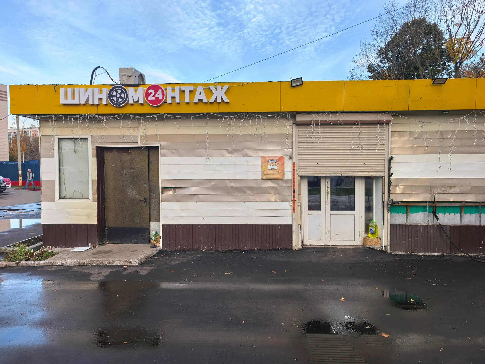
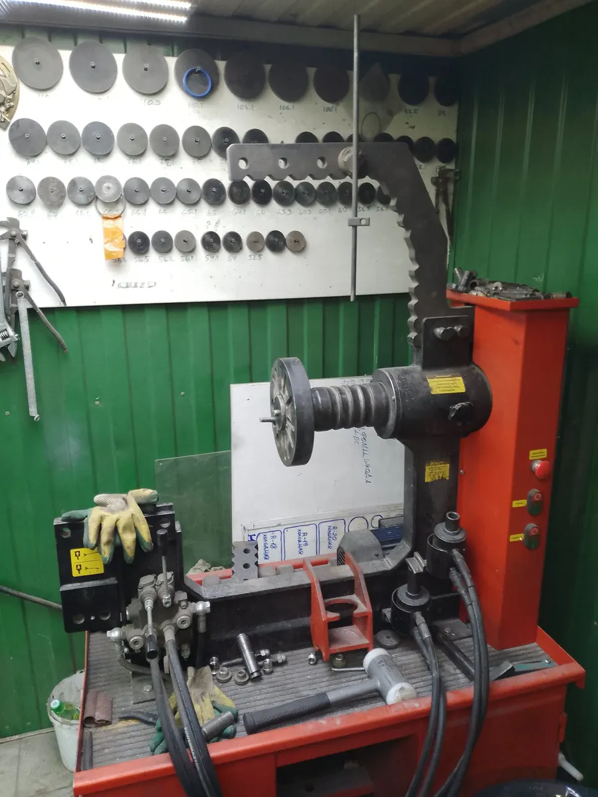
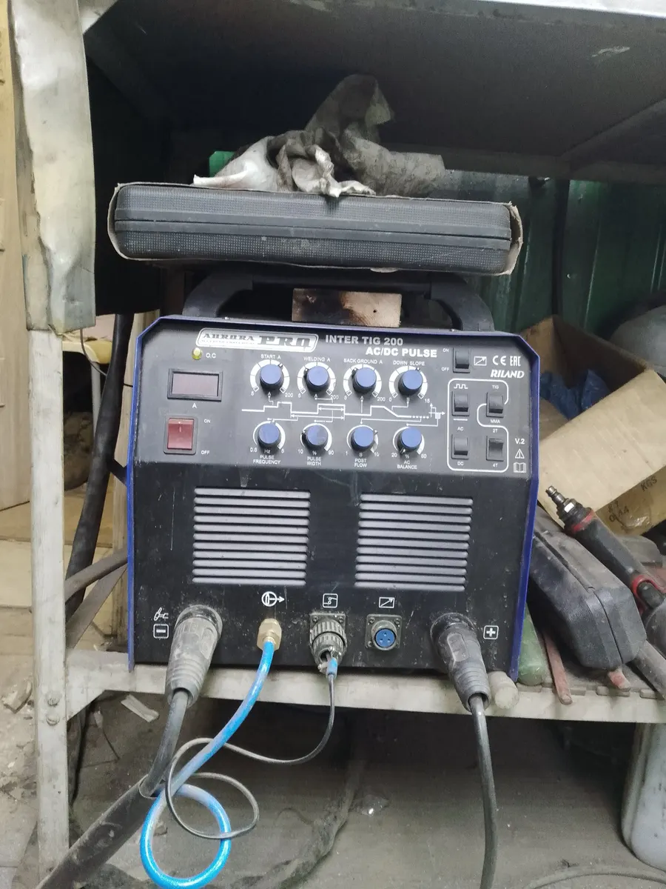
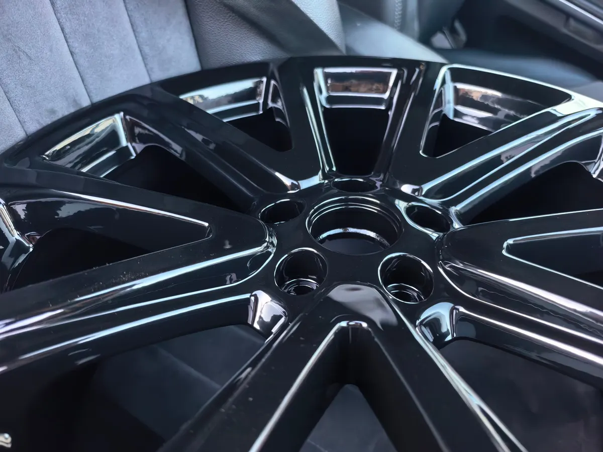

Шиномонтаж 24 часа · Кленовый бульвар, Москва
Круглосуточный шиномонтаж у метро Кленовый бульвар
Работаем днём и ночью. Перед приездом позвоните: примем сразу или скажем, сколько подождать.
- 5,0 на Яндекс.Картах, 342 отзыва
- Круглосуточно, 234 м от метро
- Ремонт боковых порезов, аргонная сварка, покраска дисков

Услуги и цены
Цены из прайса точки. Точную сумму назовём по телефону до приезда.
Комплекс: снять, переобуть, отбалансировать (4 колеса, легковые)
- R12–R153 000 ₽
- R163 500 ₽
- R174 000 ₽
- R184 500 ₽
- R195 000 ₽
- R206 000 ₽
Ремонт и мойка
- Ремонт боковых порезовточная цена зависит от поврежденияот 1 500 ₽
- Ремонт литых дисковсварка аргоном, правка «восьмёрок», без монтажа и демонтажаот 1 500 ₽
- Мойка колёс, 4 колесатехническая мойка200 ₽
- Покраска, реставрация дисковуточнить
- Сезонное хранение шинуточнить
Джипы, кроссоверы и микроавтобусы считаются по отдельному прайсу, цену назовём по телефону.
Как проходит
- 01
Позвонили в любое время
Скажем, свободны ли мы сейчас, и как проехать во двор.
- 02
Приехали на Кленовый бульвар, 28А
Павильон с жёлтой вывеской «Шиномонтаж 24» во дворе.
- 03
Сделали работу
Переобули, отбалансировали, при необходимости отремонтировали колесо.
- 04
Оплатили удобным способом
Картой, наличными или переводом.



Что говорят клиенты
Принимают ночью и рано утром
В отзывах: в 3 часа ночи и в 7 утра выходного дня.
Ремонт, которого не найти рядом
Клиенты отмечают ремонт боковины шины и аргонную сварку дисков.
Приезжают на помощь
В отзывах мастер приезжал к клиенту с пробитым колесом.
Колёса помоют и упакуют
Летние шины мыли и укладывали в пакеты.
Отзывы с Яндекс.Карт
«Единственный шиномонтаж в окрестностях, кто без проблем принял в 7 утра выходного дня и на отлично выполнил свою работу. Спасибо, что такие мастера еще есть»
Вячеслав · 12 июня
«Приехали в 3 часа ночи, большое спасибо! Работу сделали качественно и быстро. Очень приятно, еще раз благодарим! Кстати, очень недорого, определённо советуем это сервис!»
Александра · 6 сентября 2025
«Лучший шиномонтаж, без преувеличения! Всегда переобуваюсь только там, хотя живу в Зюзино. Колеса меняют лучше чем на формуле-1, всей командой, всё быстро и четко!»
Alexandr Y. · 14 апреля 2025
Отзывы с карточки на Яндекс.Картах, без правок.
Частые вопросы
Где вас найти?
Москва, Кленовый бульвар, 28А, во дворе. Это 234 м от метро «Кленовый бульвар». Ищите павильон с жёлтой вывеской «Шиномонтаж 24».
Вы правда работаете круглосуточно?
Да, режим круглосуточный. Лучше позвонить перед приездом: скажем, свободны ли мы сейчас.
Чем можно оплатить?
Картой, наличными или банковским переводом.
Беретесь за мотоколёса?
Да, на карточке указан мотошиномонтаж.
Можно оставить шины на хранение?
Да, есть хранение шин. Условия и цену назовём по телефону.
Есть гарантия?
Да, на карточке указана гарантия. Условия уточните по телефону.
Позвоните, мы на месте
- Адрес
- Кленовый бульвар, 28А, Москва
- Часы
- Круглосуточно
- Телефон
- +7 (977) 142-18-05